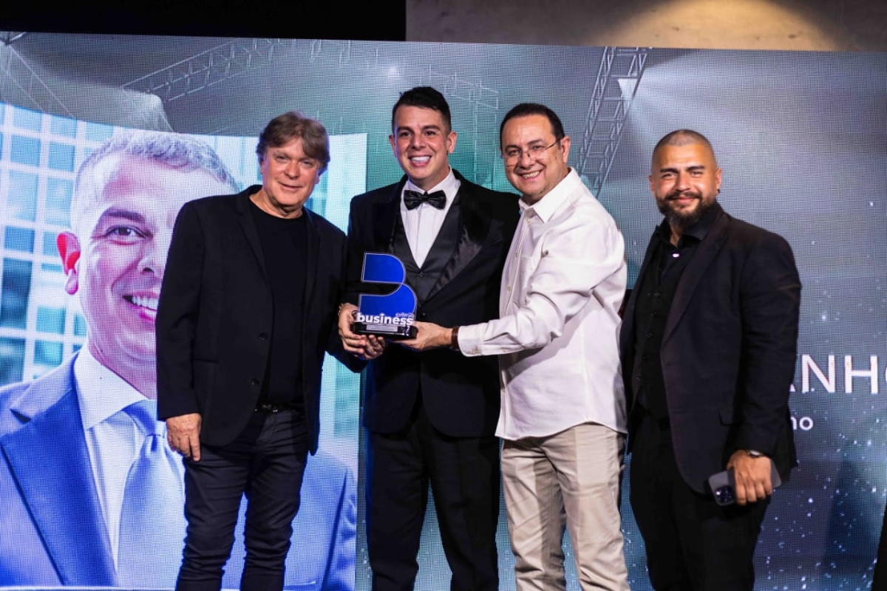
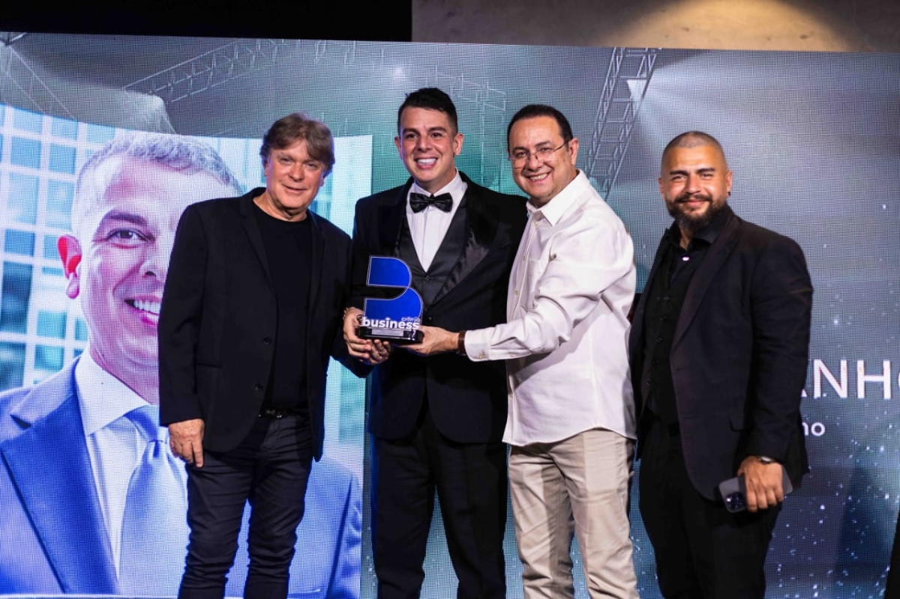
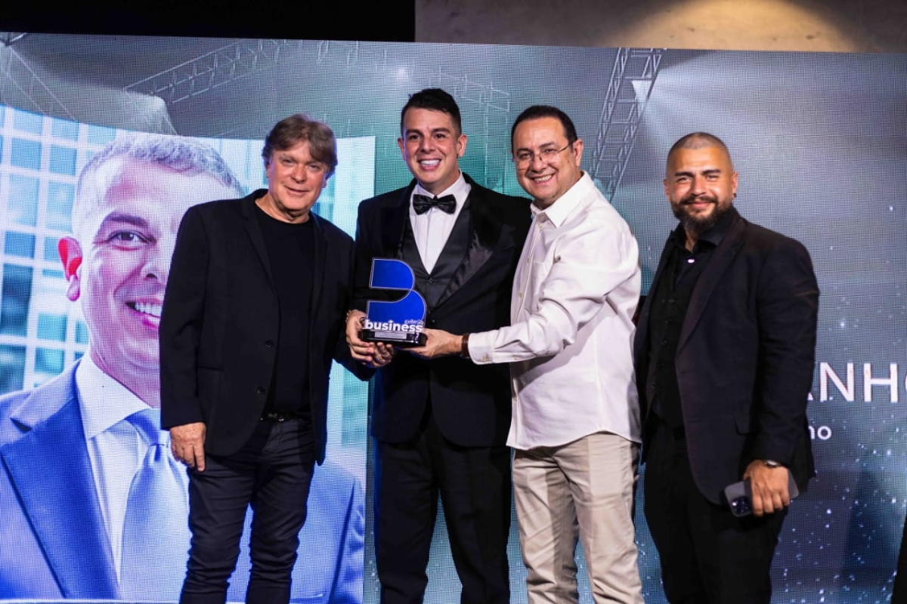

Galeria
 

Empresário visionário, líder e inspirador, projetando o futuro do Brasil.
Fernando Manholér é um empresário brasileiro com décadas de experiência em inovação e negócios. Desde jovem, sempre demonstrou uma visão estratégica e capacidade de transformar ideias em projetos concretos que impactam positivamente a sociedade e a economia do país.
Ao longo de sua carreira, Fernando se destacou por sua ética, liderança e compromisso com o desenvolvimento sustentável, tornando-se referência em empreendedorismo e planejamento estratégico.
Fundou e liderou diversas empresas de sucesso, gerando empregos e oportunidades em diferentes setores.
Desenvolveu soluções inovadoras que transformaram mercados e impactaram positivamente a sociedade.
Recebeu prêmios e menções em veículos de mídia renomados, destacando sua liderança e visão.
Fernando acredita em um Brasil mais justo, inovador e competitivo. Sua missão é implementar estratégias que conectem tecnologia, educação e desenvolvimento econômico, criando oportunidades para todos.
Sua visão é tornar o país referência em inovação, sustentabilidade e crescimento, inspirando novas gerações de líderes e empreendedores.
